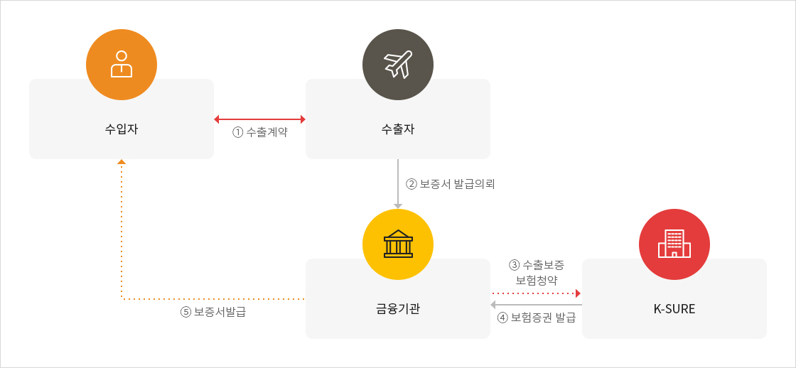

수출보증보험
제도개요
금융기관이 수출거래와 관련하여 수출보증서를 발행한 후 수입자(발주자)로부터 보증채무 이행청구를 받아 이를 이행함으로써 입게 되는 금융기관의 손실을 보상하는 제도- 국제거래시 수입자는 수출자의 수출이행에 대한 담보로서 수출자로 하여금 금융기관의 수출보증서를 제출하도록 요구
- 수출보증보험은 수출보증서를 발행한 금융기관이 보증수익자(수입자 또는 발주자)로부터 보증채무 이행청구(Bond-Calling)를 받아 대지급하는 경우에 입게 되는 손실을 보상함으로써 수출자가 수출보증서를 용이하게 발급받을 수 있게 하는 수출지원제도
수출보증서의 종류
| 구분 | 내용 |
|---|---|
| 입찰보증 (Bid Bond) |
입찰방식 거래에 있어서 입찰자가 낙찰된 후 계약체결에 응하지 않거나 계약체결 후 일정기간 내에 계약이행보증서를 제출하지 못하는 경우 발주자가 지급청구를 할 수 있도록 하는 보증서 |
| 계약이행보증 (Performance Bond) |
산업설비수출계약이나 해외건설공사계약을 체결한 수출자가 계약상의 의무이행을 하지 않음으로써 발주자가 입게되는 손해를 보상받기 위해 발행하는 보증서 |
| 선수금환급보증 (Advanced Payment Bond) |
수출자가 선수금 수령 후 수출이행을 하지 않는 경우에 수령한 선수금에 대한 반환청구를 할 수 있는 보증서 |
| 유보금환급보증 (Retention Bond) |
기성고방식의 수출거래에 있어서 수입자는 각 기성단계별 기성대금 중 일부를 수출자의 완공불능위험에 대비하기 위해 유보하게 되는데, 수출자가 유보금에 해당하는 금액을 결제받기 위해서 제출하는 보증서 |
| 하자보수보증 (Maintenance Bond) |
산업설비의 설치 또는 해외건설공사 완료 후, 일정기간 완공설비나 건물 등에서 발생하는 하자발생에 따른 손실을 담보하기 위해 발행하는 보증서 |
상품구조
금융기관용 : 보험계약자가 보증서 발행 금융기관인 경우

크게보기
{kind=link}
{kind=link}
대상거래
- 해외건설 촉진법의 규정에 의한 해외공사
- 대외무역법에서 정한 수출(다만, 중계무역, 외국인도 수출제외)
- 기타 서비스·용역 수출